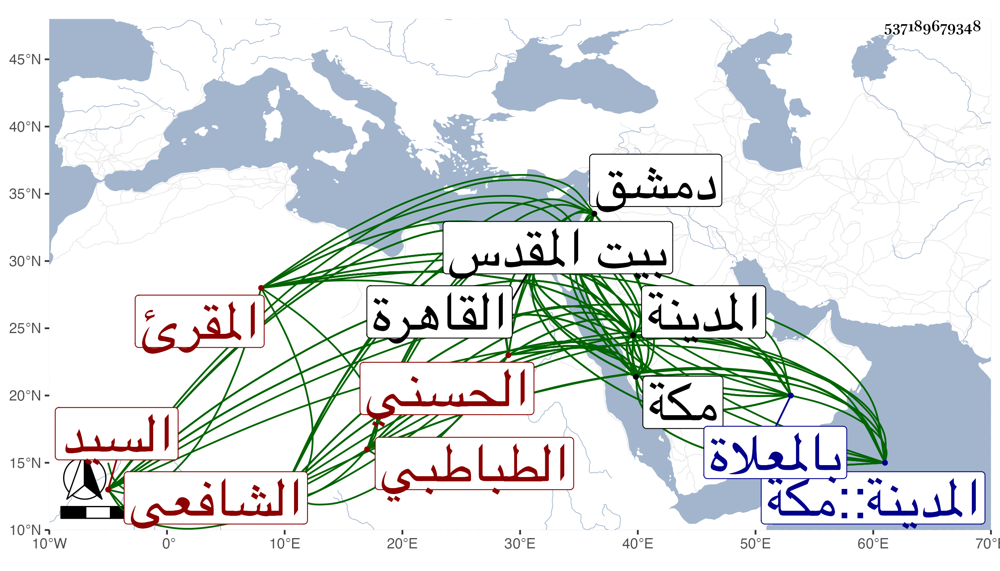

0902Sakhawi.DawLamic.ITO20230111-ara1.EIS1600.537189679348
Biography ID: 537189679348
إبراهيم بن أحمد بن عبد الكافي بن علي أو عبد الله السيد برهان الدين أبو الخير الحسني الطباطبي الشافعي المقرئ نزيل الحرمين أخذ القراآت عن الشيخ محمد الكيلاني بالمدينة والشهاب الشوابطي بمكة ومن قبلهما عن الزين بن عياش بل في سنة ثمان وعشرين عن ابن سلامة وابن الجزري وكذا أخذها بالقاهرة عن حبيب بن يوسف الرومي والزين رضوان وابي عبد الله محمد بن حسن بن علي بن سليمان الحلبي بن أمير حاج والتاج بن تمرية وبخانقاه سرياقوس عن الكمال محمود الهندي ومن قبلهم عن الزراتيتي في سنة ثلاث وعشرين تلا عليه البعض لأبي عمر وبدمشق عن أبي عبد الله محمد بن أحمد بن النجار وبعضهم في الأخذ عنه أزيد من بعض واقصى ماتلا به للعشر وكذا سمع على أبي الفتح المراغي والتقى بن فهد ومما قرأ عليه مسند أحمد وعلى أولهما صحيح مسلم بالروضة النبوية في رمضان سنة اربع وأربعين وفيه سمع عليه الشفا والمحب المطري وقرأ عليه صحيح مسلم والسنن لأبي داود والترمذي والموطأ والشفا والجمال الكازروني وسمع عليه مجالس من أبي داود وغيره ثم بالمدينة ومكة وأخذ عن شيخنا وغيره بالقاهرة كالعز بن الفرات ومما قرأ عليه الأربعين التي انتقاها شيخنا من مسلم في سنة ثمان واربعين وسمع عليه من أول الترمذي إلى الصلاة التي تليها وقرأه بتمامه على الجمال عبد الله بن جماعة ببيت المقدس في سنة تسع وخمسين وقرأ قبل ذلك في رمضان سنة اثنتين وثلاثين من أول مسلم إلى الإيمان على الشهاب أحمد بن علي بن عبد الله البعلي قاضيها الحنبلي ابن الحبال بسماعه له على بعض من سمعه على أم أحمد زينب ابنة عمر بن كندي عن المؤيد وتصدى للاقراء بالحرمين وأخذ عنه الأماثل وممن جمع عليه للأربعة عشر الشريف الشمس محمد بن علي بن محمد المقسي الوفائي الحنفي الشيخ القجماسية الآن وبلغني أنه كتب على الشاطبية شرحا ولقد لقيته بمكة وسمع بقراءتي على الكمال بن الهمام وغيره وكان أحد الخدام بالحجرة النبوية وهو الذي أنهى أمر ابن فدعم الرافعي إلى الظاهر جقمق وأنه سمع منه ما يقتضي الكفر فبادر إلى الاحتيال عليه حتى أحضر إليه فأمر بقتله وبعد ذلك كف السيد عن الإقامة بالمدينة ولزم مكة مديما للطواف والعبادة والاقراء حتى مات بها في مغرب ليلة الجمعة ثالث المحرم سنة ثلاث وستين وصلى عليه بعد صلاة الصبح عند باب الكعبة ودفن بالمعلاة رحمه الله . وينظر إبراهيم ابن أحمد الشريف البرهاني الطباطبي ختن محمود الهندي فأظنه غير هذا .
